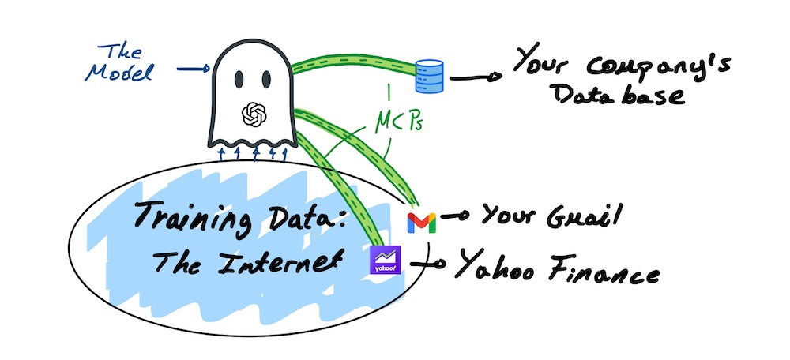

Generative AI's Secret Weapon: MCP
June 2025
What is the Model Context Protocol? For a non-technical reader.
Picture this: Your AI books a flight, sends an email, or checks the weather—instantly and accurately. That's MCP's magic.
Introduction
As of June 2025, MCP is a well-known concept in the developer world, but we are yet to make a good job of granting access to its magic to the general public. This article attempts to demystify MCP for non-technical readers, showing how it transforms AI into a real-world helper.
When ChatGPT launched on November 30, 2022, the world got a first sight of a Generative AI chatbot, and our minds were blown. A ghost behind a computer that we could talk and ask questions to, that could do most of our writing, and could explain topics and fields in detail. And that was just the first small wave of a big swell that was to come.
That ghost has gotten increasingly better over time, and has even seen competition appear in the form of Grok, Claude, Gemini, and others.
But in the minds of ambitious users who love saving time, limitations quickly rose to the surface.
In its early days, due to its training data date cutoff, ChatGPT could not respond with up-to-date information. On the other hand, it could not carry out tasks on my behalf; send emails, transfer money, buy a stock, or pretty much anything you do through your phone or computer. Stand alone AI assistants still have not managed to do all of this on their own.
Fast forward two years and many new and improved models: MCP is born. On November 25, 2024, Anthropic—the company behind Claude—released the Model Context Protocol.
So, how does MCP attempt to solve these limitations? Let's break it down.
Model Context Protocol (from now on, MCP.)
What is MCP?
Anthropic described MCP as:
'a new standard for connecting AI assistants to the systems where data lives, including content repositories, business tools, and development environments. Its aim is to help frontier models produce better, more relevant responses.'
Bringing the above explanation to a more relatable language, we can think of MCP as a universal bridge that connects AI to your apps, letting it fetch data or take actions on its own, when you ask it to.
MCP gives your AI assistant the ability to interact with the applications you give it access to, behaving as it was you. All this, directed simply by typing a prompt to the AI.
For everyday users, MCP means your AI can finally do more than just chat—it can act.
Why MCP Matters
Ever wished your AI could handle your inbox or plan your week, all from the same interface? With MCP, that's now possible.
This new technology has two main purposes or use-cases:
- Access resources: Lets the model access live data:
- Get the latest stock quotes or news
- Make a query to your company database for specific information (best performing units, etc.)
- Access tools: Lets the model take action:
- Buy a stock
- Calculate a credit score using your company internal credit scoring model
Okay, making changes is cool, but as you may know, current models have access to the web, so doesn't ChatGPT already have access to the stock data, the news, etc?
It does. But in an unstructured and multi-sourced way. That's why many times the chatbot gives back ambiguous responses, hedging itself by saying: 'one source says this and the other says that.'
By implementing an MCP, we are not training ChatGPT into predicting what the quotes will be like tomorrow. Instead of crafting an answer based on outdated data, we are giving it access to your Stock quotes provider (say Yahoo Finance API) ensuring you get tomorrow's prices with pinpoint accuracy. We are removing room for doubt in the output. We are connecting the bot to the real world in real-time.
As the Machine Learning researcher, Andreas Maier, very well described in an article published in May 2025 on Medium; 'for AI assistants to be truly useful, they must access the right context at the right time.' It has been repeatedly recognized among the tech world that models are as good as the context we give them, so using MCP as a context generator is like giving the model a supercharge.
This by itself is relevant. But just the first side of the gold coin.
In the same way that through MCP we can connect Claude to Yahoo Finance, we can also connect the AI assistant to our Gmail and give it permission to craft and send emails. We can connect it to our company databases to query for specific information, or to our company machine learning models to generate predictions (such as calculating a credit score model when analyzing a credit request customer data).

As shown in the sketch above, MCP provides the model with direct access, removing the distraction of any other possible source within the original training data, to applications of our choice.
Lastly, one extra gem of the relationship between AI models and MCP is that the model is always aware of the MCP tools it has at its disposal, and knows when to use them, without having to be told to do so. For instance, your AI model will know whether the connected service allows to get latest quotes or news, without you explicitly telling which are the available services. Notice that is nonetheless possible to clarify when we intend the model to actually use them.
Security Risks of MCP: Stay Safe with Smart Choices
You might feel uneasy about letting an AI assistant control your computer or access your accounts. That's a valid concern, but MCP is designed with safety in mind. It only connects to apps you explicitly approve, and you decide what actions it can take—whether it's reading your database or starting an order to buy cryptocurrency. For example, you can allow Claude to check your company database but restrict it from deleting messages. Or you can start buy orders that you need to manually confirm. In both cases you keep full control.
That said, caution is key. Not all MCP tools are created equal. Some may come from unverified developers, potentially exposing your data or allowing unintended actions. For instance, a poorly designed MCP tool could accidentally share sensitive information, like your calendar details, if not properly vetted. A 2025 article by Backslash, an app security company, delves deeper into these risks, explaining how attackers might exploit misconfigured MCP tools and offering practical safety tips. If you're curious about the technical details, read their article "Guilty, Innocent, or Just Risky? Why MCP Server Security Verdicts Are Hard."
The good news? These risks are manageable if you stick to verified MCP tools from trusted sources, like those developed by Anthropic or well-known platforms like LinkedIn or PayPal. Think of it like downloading apps on your phone—stick to official app stores, and you're usually safe. Developers are also working to improve MCP security, adding features like better permission controls and sandboxing to keep your data secure. As MCP matures, these safeguards will only get stronger.
To stay safe, follow these simple steps:
- Use Trusted Tools: Only connect MCPs from reputable developers or official app platforms.
- Check Permissions: Review what each MCP tool can access and limit it to what's necessary.
- Stay Updated: Use the latest versions of AI apps like Claude to benefit from security improvements.
By being mindful and choosing verified MCPs, you can enjoy MCP's benefits—smarter, faster AI assistance—without worrying about security. As the technology grows, these concerns will fade, making MCP a reliable part of your digital life.
The Potential of MCP
This technology is incredibly powerful and has huge potential.
Huge potential because Anthropic decided to make this technology open-source, meaning everyone has access to the backbone design of it, and therefore can improve and implement it with ease. By making MCP open-source, Anthropic invites developers worldwide to create new connections, meaning more apps and tools will work seamlessly with AI.
Since the release on November of the past year, we have seen developers build and share a multitude of MCP tools, ranging from the LinkedIn MCP, that lets users schedule, write, and post, all from Claude, or other models adopting MCP, and the PayPal MCP, that allows the user to send a refund or create an invoice, also by just talking to Claude.
So yes, MCP gives your AI assistant superpowers.
How do I get these super MCP powers?
By this point you are probably wondering how you can give these capabilities to the application in your computer.
The good news is that, for most standard use cases, developers are building MCP tools into apps like Claude or ChatGPT, so you'll see options to link apps like Gmail or LinkedIn directly in the AI's interface. Chances are that you have already been using some MCPs through these apps without knowing.
For more custom MCP use cases, such as connecting your AI models to your company databases or systems or developing chatbots for specialized use cases, you will need some specialized development assistance.
Contact Us for Custom MCPs
If you'd like to have a custom MCP built for you, your team, or your company, contact us at info@betasigma.tech and we can start planning right away.
Conclusion
MCP is set to make AI assistants smarter, faster, and more useful, turning them into powerful digital partners. As developers build more MCP tools, expect your AI to handle more of your daily tasks with ease.
Smarter because models are as good as the context we give them, and MCPs are the key to accessing up-to-date, trustworthy context.
More useful because MCPs allow us to take action by talking to an AI.
Stay tuned for more examples of MCP-powered apps, and to learn what's already possible!